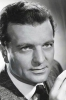
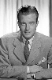
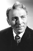

Country:United States, 85 minutes
Spoken languages:
Genres:Crime, Drama
Director(s):Robert Stevenson
Writer(s):Ben Hecht, Edmund H. North, André de Toth
Video Codec:Unknown
Number: 1442


Certification:
Storyline:
Art editor Madeleine Damian carries on numerous loveless affairs. After a failed relationship with advertiser Felix Courtland, the increasingly depressed Madeleine attempts suicide. When Jack Garet, her secretary and former lover, tries to blackmail her, Madeleine resigns and seeks a reclusive life. Neighbor David Cousins befriends Madeleine, but soon Courtland and Garet discover her whereabouts and disrupt her new life.
Cast:   

Medium: Original DVD,
Comments: Part of: Leading Ladies - Classic 20 Movie Collection
Loaned: No
Aspect ratio: Unknown